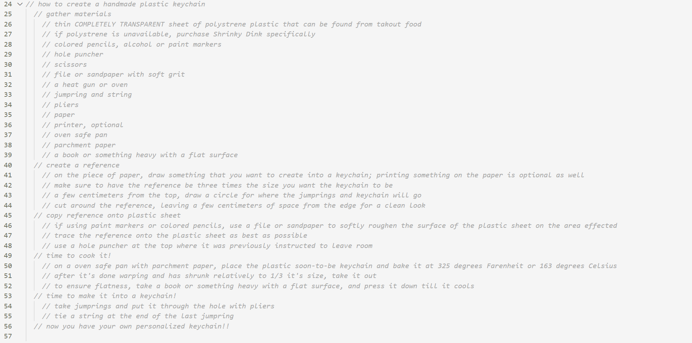
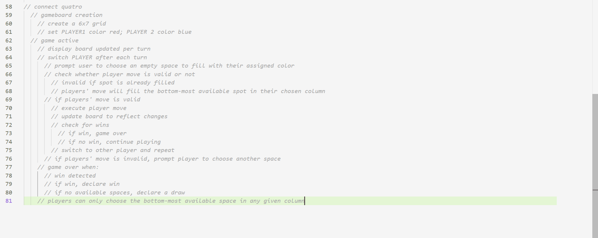

Lab 4 - Pseudocode & Problem Solving
Challenge
To think in terms of pseudocoding before going straight into coding.
Problems
I struggled with starting on the pseudocoding for the "simple computer game" task. I couldn't get my mind into the 'pseudocoding mindset', but my partner helped me out a ton on this aspect.
Reflection
I think that I did the best I could. The lab wasn't too hard to accomplish, and although I did struggle to think up of the correct way to type up the pseudocode for the computer game task, I'm glad my partner helped me out. I was worried that I wouldn't be able to think of a skill that would be worth talking about step-by-step, but I'm quite satisfied with my simple craft idea. There were enough steps to type out a decently long instruction!
Results
// how to create a handmade plastic keychain
// gather materials
// thin COMPLETELY TRANSPARENT sheet of polystrene plastic that can be found from takout food
// if polystrene is unavailable, purchase Shrinky Dink specifically
// colored pencils, alcohol or paint markers
// hole puncher
// scissors
// file or sandpaper with soft grit
// a heat gun or oven
// jumpring and string
// pliers
// paper
// printer, optional
// oven safe pan
// parchment paper
// a book or something heavy with a flat surface
// create a reference
// on the piece of paper, draw something that you want to create into a keychain; printing something on the paper is optional as well
// make sure to have the reference be three times the size you want the keychain to be
// a few centimeters from the top, draw a circle for where the jumprings and keychain will go
// cut around the reference, leaving a few centimeters of space from the edge for a clean look
// copy reference onto plastic sheet
// if using paint markers or colored pencils, use a file or sandpaper to softly roughen the surface of the plastic sheet on the area effected
// trace the reference onto the plastic sheet as best as possible
// use a hole puncher at the top where it was previously instructed to leave room
// time to cook it!
// on a oven safe pan with parchment paper, place the plastic soon-to-be keychain and bake it at 325 degrees Farenheit or 163 degrees Celsius
// after it's done warping and has shrunk relatively to 1/3 it's size, take it out
// to ensure flatness, take a book or something heavy with a flat surface, and press it down till it cools
// time to make it into a keychain!
// take jumprings and put it through the hole with pliers
// tie a string at the end of the last jumpring
// now you have your own personalized keychain!!

// connect quatro
// gameboard creation
// create a 6x7 grid
// set PLAYER1 color red; PLAYER 2 color blue
// game active
// display board updated per turn
// switch PLAYER after each turn
// prompt user to choose an empty space to fill with their assigned color
// check whether player move is valid or not
// invalid if spot is already filled
// players' move will fill the bottom-most available spot in their chosen column
// if players' move is valid
// execute player move
// update board to reflect changes
// check for wins
// if win, game over
// if no win, continue playing
// switch to other player and repeat
// if players' move is invalid, prompt player to choose another space
// game over when:
// win detected
// if win, declare win
// if no available spaces, declare a draw
// players can only choose the bottom-most available space in any given column
